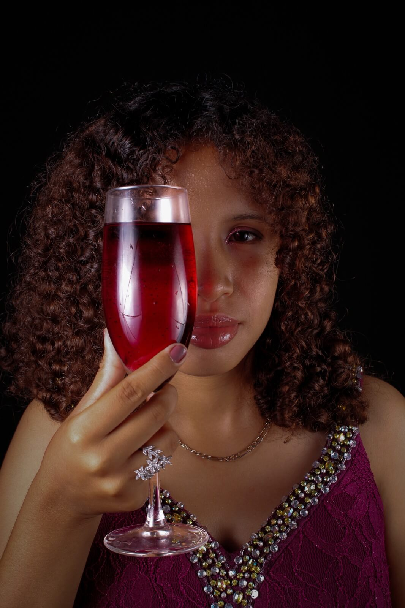
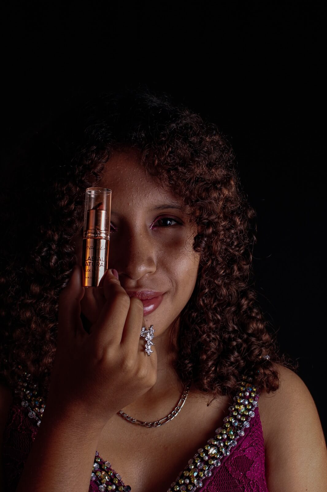
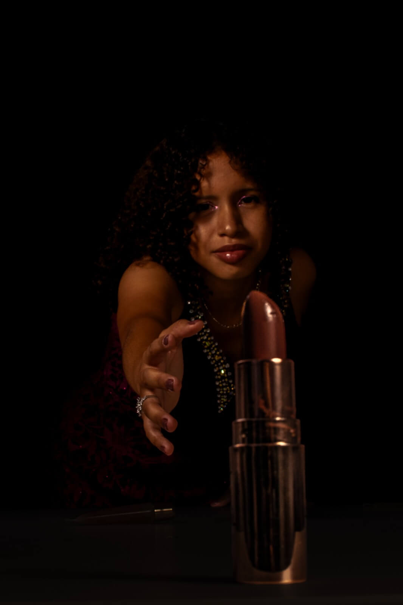
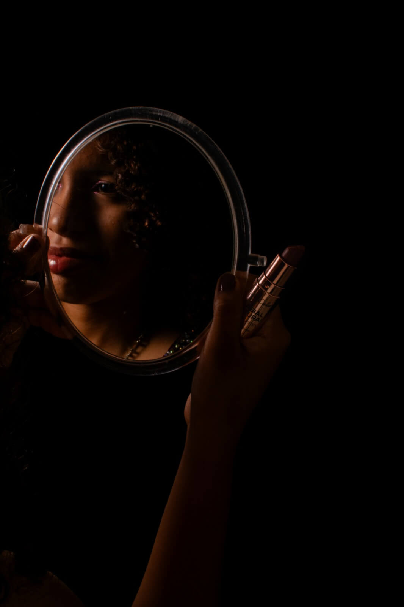

Producto y Modelo

Un brindis a medianoche
Esta fotografía busca transmitir lo que es la elegancia, y celebración. Ya que, al mostrar la copa en primer plano, junto con la iluminación oscura y el vestuario brillante, crea un ambiente sofisticado y un poco misterioso, estas fotografías buscan transmitir lo conceptual o publicidad para bebidas, eventos o contenido de redes sociales, buscando transmitir una sensacion de lujo y una experiencia especial.

Un brindis a medianoche
Esta fotografía busca transmitir lo que es la elegancia, y celebración. Ya que, al mostrar la copa en primer plano, junto con la iluminación oscura y el vestuario brillante, crea un ambiente sofisticado y un poco misterioso, estas fotografías buscan transmitir lo conceptual o publicidad para bebidas, eventos o contenido de redes sociales, buscando transmitir una sensacion de lujo y una experiencia especial.

Mirada de lujo
La modelo utiliza el producto como parte del retrato, mientras la iluminación y el fondo oscuro hacen que tanto su mirada como el objeto destaquen. Estas fotografías son utilizadas para elementos publicitarios de belleza para maquillaje, productos cosméticos o campañas de redes sociales, buscando presentar el producto de una forma elegante y llamativa.

A media luz
Esta fotografía transmite elegancia y sensualidad, además el contraste entre la luz y la oscuridad crean una perspectiva forzada del labial logrando que destaque, y formando una escena intensa y llamativa. Este tipo de fotos de belleza son ideales para crear publicidad de productos de maquillaje, especialmente labiales, que busca resaltar el producto mediante una iluminación dramática y una composición más artística.

El ritual de arreglarse
Esta fotografía busca transmitir seguridad, mediante una iluminación oscura y uso del espejo, esta logra que el maquillaje y la expresión de la modelo destaquen, creando una escena llamativa y promocionando lo que es el tono del labial. Este tipo de fotografía de retrato y belleza puede utilizarse para el contenido de redes sociales, campañas de maquillaje o como parte de un portafolio fotográfico.

Penumbra de lujo
Al utilizar una iluminación baja crea una sensación de misterio y sofisticación ya que es una escena un poco oscura con una luz lateral que enfoca lo que es la copa, además se puede observar entre las sombras una mirada fija de la modelo, evocando lujo, confidencialidad y elegancia nocturna. Perfectas para portadas de revistas, artículos o publicaciones sobre moda nocturna, gastronomía de lujo o estilo de vida sofisticado.